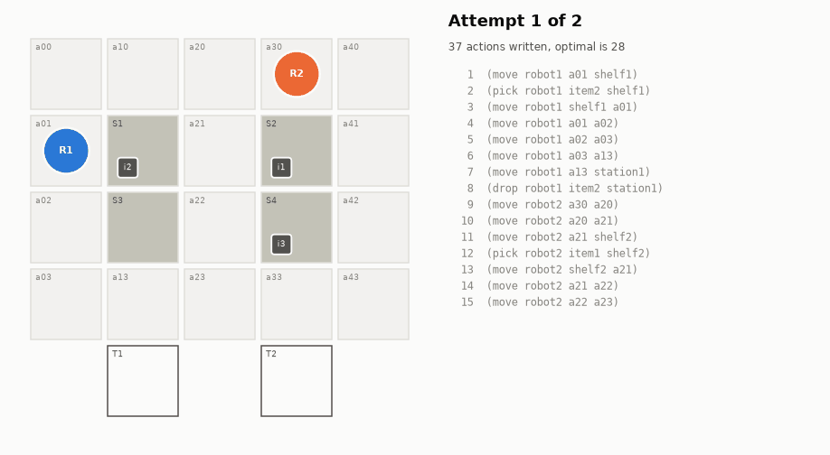
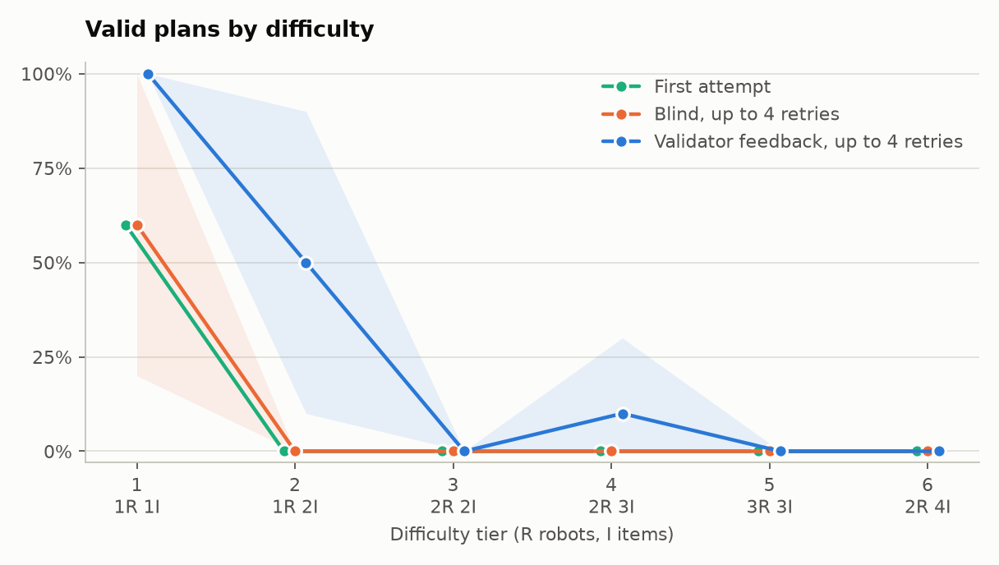
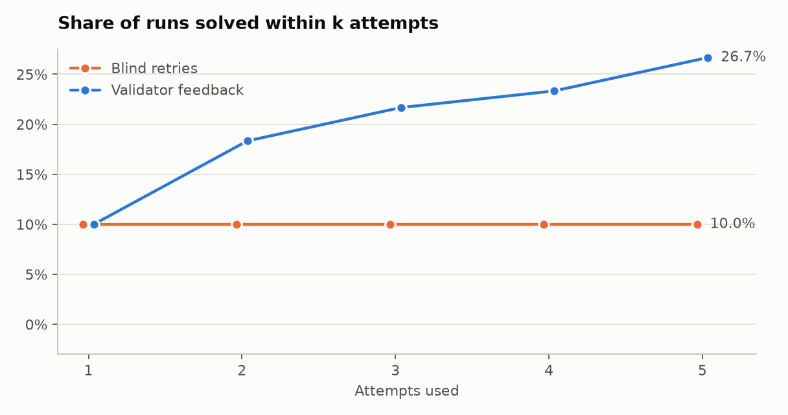
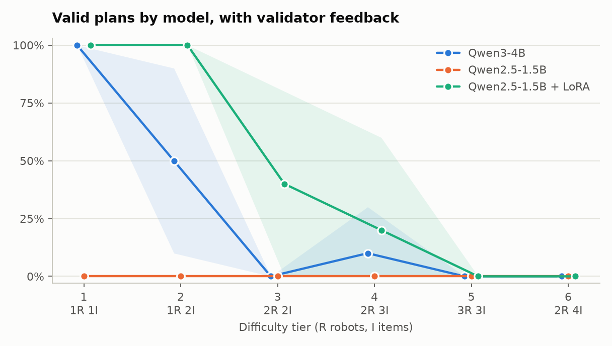

Verified LLM Planning for Warehouse Robots
A small open LLM writes PDDL plans. A classical validator checks every step, and a rejected plan goes back to the model with the reason. Fast Downward gives the optimal plan to compare against, and a control arm retries with no feedback.
New to planning or LLMs? Read the project in plain English, with a map of the warehouse, one run step by step and a glossary.

Results
| Model | Runs | First attempt | After feedback | After blind retries | Length / optimal |
|---|---|---|---|---|---|
| Qwen3-4B | 60 | 10.0%0 to 23 | 26.7%12 to 42 | 10.0%0 to 23 | 1.11 |
| Qwen2.5-1.5B | 30 | 0.0% | 0.0% | 3.3% | n/a |
| Qwen2.5-1.5B + LoRA | 30 | 36.7%20 to 53 | 43.3%27 to 60 | 56.7%40 to 73 | 1.09 |


Findings
Feedback works on a model that is already close
On Qwen3-4B, feedback beat blind retries by 16.7 points (95% interval +5.0 to +30.0). It repaired 10 of the 54 failed first attempts, in 2.0 rounds on average, and delivered 49.6% of all items against 32.8%.
It does nothing for a model that is not
Qwen2.5-1.5B produced 0 valid plans in 90 first attempts, and 4 rounds of feedback did not change that.
Most of the gain is on the easy tiers
Feedback took Qwen3-4B from 60% to 100% on tier 1 and from 0% to 50% on tier 2. It solved 1 of 10 runs on tier 4 and none on tiers 3, 5 and 6, where several robots share the map.
Fine-tuning moved more than feedback did
Three epochs of LoRA on 120 verified plans took Qwen2.5-1.5B from 0% to 36.7% on the first attempt, ahead of the larger Qwen3-4B.
The two do not add up
On the fine-tuned model and known maps, feedback did worse than blind retries, by 13.3 points (95% interval -26.7 to -3.3). The likely reason is that LoRA trained only on plans from the initial state, while a repair starts mid-plan and keeps every locked step. This run does not prove that explanation.

Known maps and new maps
Benchmark and training tasks are distinct but share their maps, so every model also ran 20 problems on wider maps that no prompt or training example shows. New maps are harder in their own right: the mean optimal plan grows from 18.4 to 20.7 steps, and Qwen3-4B falls too although it was never trained on any map. So the drop cannot be read as memorization alone. On new maps the fine-tuned 1.5B model still beats Qwen3-4B, and for it feedback and blind retries are level.
| Model | First attempt, known | First attempt, new | Feedback, known | Feedback, new | Blind, known | Blind, new |
|---|---|---|---|---|---|---|
| Qwen2.5-1.5B | 0/20 | 0/20 | 0/20 | 0/20 | 1/20 | 0/20 |
| Qwen2.5-1.5B + LoRA | 11/20 | 4/20 | 13/20 | 7/20 | 16/20 | 6/20 |
| Qwen3-4B | 6/40 | 0/20 | 16/40 | 2/20 | 6/40 | 0/20 |
Limits
- 30 problems is a small sample, and the intervals are wide. Qwen3-4B has 2 replicates per problem, the other models have 1.
- Plan length is measured on solved runs only, which are mostly easy problems.
- Fine-tuning used Fast Downward's plans, not the model's own. The base model produced too few verified plans to train on, so this measures learning from verified plans and is not a closed self-improvement loop.
- Prompts were tuned on the dev set with Qwen2.5-1.5B and then frozen, so Qwen3-4B runs with prompts that were not tuned for it.
- Llama 3.2 1B was not tested because the model is gated, and the Claude backend was not run because no API key was available.